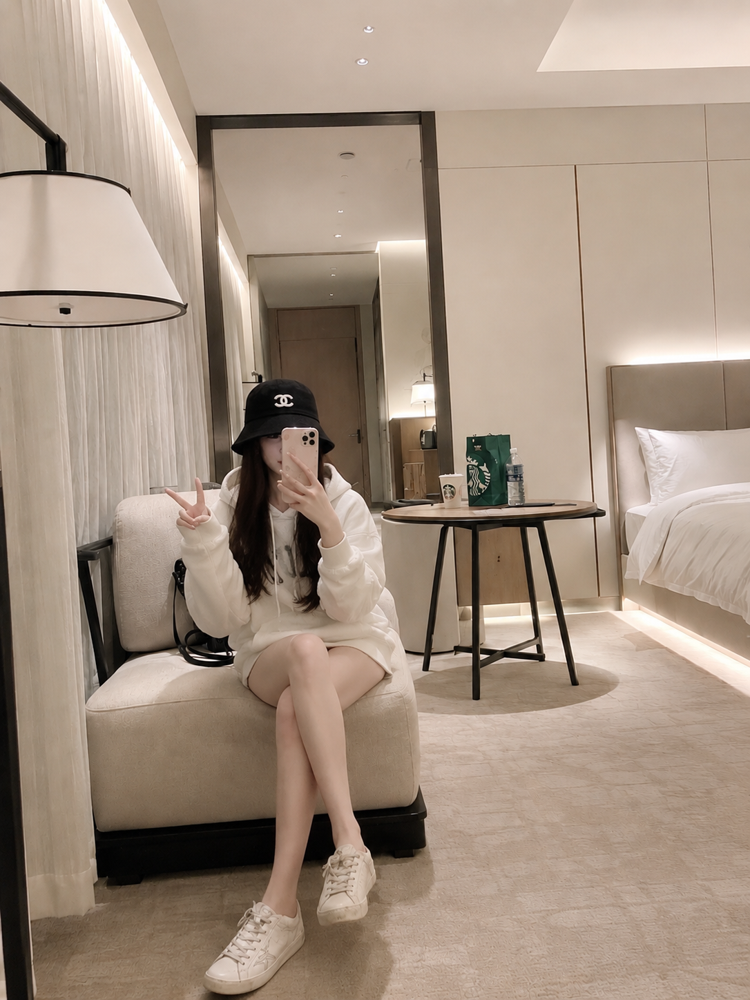
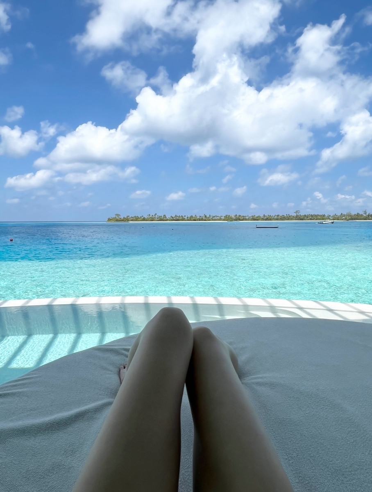

知識ゼロから学べる
知識ゼロからでもOK！未経験から始めた子もたくさんいるし、スマホ1つでスタートできます！
BOAT RACE × BEGINNER
ギャンブルは運試し、難しそう ──
そんなイメージ、もう古い。
私が、ボートレースの「勝ち方」を
1から丁寧に教えます！

WHY YOU CAN START
最初は誰でも初心者です。
基礎からわかりやすくお伝えするので、
ボートレースを知らない方でも安心して学べます。
知識ゼロからでもOK！未経験から始めた子もたくさんいるし、スマホ1つでスタートできます！
働いている方も、家事や育児で忙しい方も。1日10分から始められます！
分からないことはいつでも私にLINEで聞けるよ！目標達成するまで私がしっかりサポートします！

WHO IS AMANE?
実は私... 1年前まで手取り15万で借金300万もある社会人でした... 自由に使えるお金なんて1円もなくて、もちろん貯金する余裕なんてなかったんだよね。
でも、今は... 時間にもお金にも余裕のある生活ができています！知識ゼロの私でも生活が大きく変わりました。同じようにお金で悩んでる子、「自分でもできるかな」と不安を抱えてる子の力になれたら嬉しいなと思ってSNSを通じて発信しています！📱
— あまね
DAILY
横にスライドして、日常をのぞいてみてね。
VOICE
LINEで教わっている方から届いたメッセージをご紹介します。
※掲載内容は個人の感想であり、成果を保証するものではありません。
LET'S GET STARTED
「私にもできるかな？」という小さな疑問からで大丈夫。
LINEで、あまねに気軽に相談してみてください。